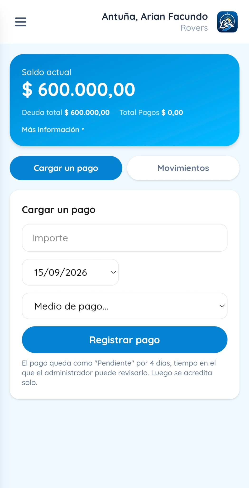

Consultá tu saldo
Visualizá cuánto debés, qué pagaste y todos tus movimientos de forma clara y actualizada.
Más que una herramienta, es parte del camino
Azimut ayuda a las familias a ver el estado de su cuenta, registrar pagos y estar siempre listas para campamentos, salidas y actividades del Grupo Scout.
 Azimut
AzimutTu cuenta,
siempre a la vista.

▶
Tu grupo,
siempre cerca
Simple, claro
y desde cualquier lugar
Azimut en 30 segundos
Conocé cómo Azimut acompaña a las familias antes de cada salida, campamento y nueva aventura.
Todo lo que necesitás, en un solo lugar
Visualizá cuánto debés, qué pagaste y todos tus movimientos de forma clara y actualizada.
Cargá tus comprobantes en segundos y seguí el estado de cada pago desde un solo lugar.
Mantené todo al día y asegurá la participación en salidas, campamentos y eventos del Grupo Scout.